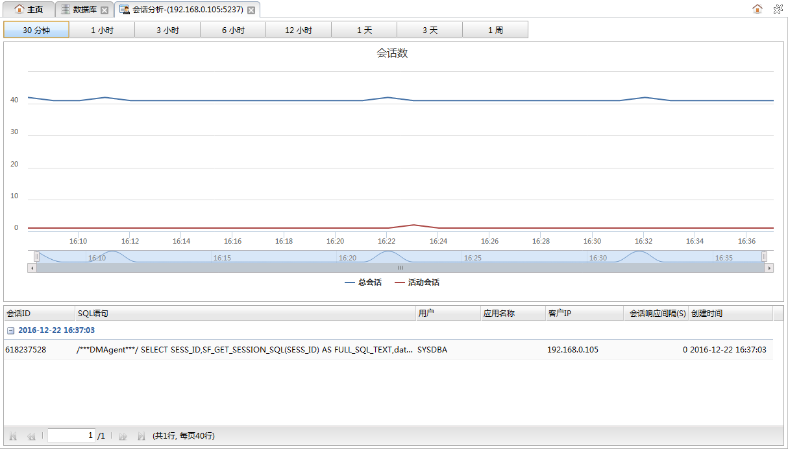
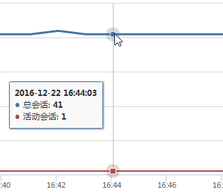
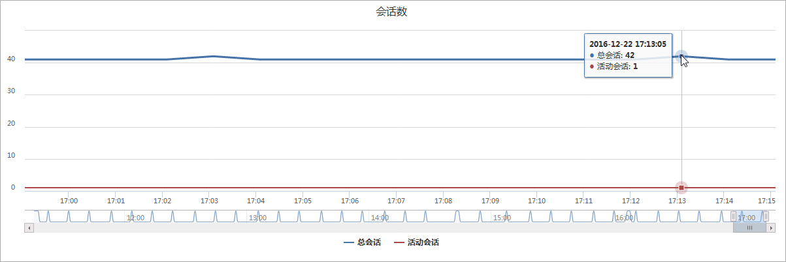

从数据库监控面板中的数据库列表的操作下拉菜单中点击会话分析可以打开会话分析面板，该页面用于查看最近一段时间内数据库实例会话数变化情况。如下图所示:

时间按钮
点击按钮可以切换查看最近各个不同时间段内的会话数变化情况。
会话数图表
图表中显示的是总会话数和活动会话数变化曲线图。横坐标是时间，纵坐标是会话数。鼠标放到曲线图的某一点上可以查看该时刻的详细信息。如下图所示：

当图表跨时间段较长不好定位到具体的时间点时，可以拖动图表下方的标尺，临时放大指定区间的曲线图，如下图所示：

会话信息列表
列表中为当前所选时间段内的会话信息。列表中的记录按时间降序排列，且按日期分组显示。
| 字段 | 说明 |
|---|---|
| 会话ID | 会话ID。 |
| SQL语句 | 会话执行的sql语句。 |
| 用户 | 创建会话的用户。 |
| 应用名称 | 创建会话的应用程序名称。 |
| 客户端IP | 创建会话的客户端IP地址。 |
| 会话响应间隔 | 会话响应时间间隔，单位秒。 |
| 创建时间 | 会话创建时间。 |